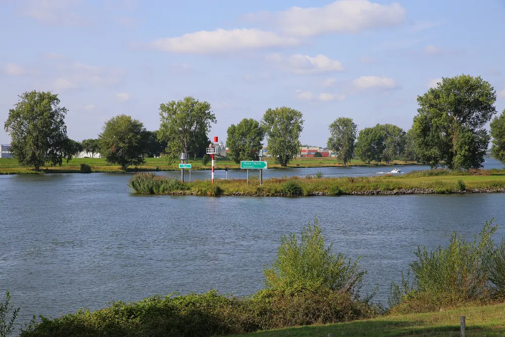

Bestemming bij Nijmegen
Heumen
Charmant dorpje dichtbij Nijmegen, met een rijke geschiedenis en prachtige natuur. Ideaal voor rustzoekers en liefhebbers van het buitenleven.

Heumen: rust en natuur aan de rand van Nijmegen
Heumen ligt aan de Maas en het Maas-Waalkanaal, net ten zuiden van Nijmegen. De gemeente bestaat uit de dorpen Heumen, Malden, Overasselt, Nederasselt en een deel van Molenhoek. Malden is het grootste dorp en daar staat ook het gemeentehuis. Het is een rustige streek met veel bos, heide, vennen en uiterwaarden.
Wat te doen in Heumen?
De Overasseltse en Hatertse Vennen
Een natuurgebied met vennen, bossen en heide, ideaal om te wandelen. Aan de rand liggen de resten van de middeleeuwse Sint-Walrickkapel. Er staan alleen nog lage muurtjes in het gras, en je kunt er altijd vrij rondlopen. Vlakbij zit Pannenkoekhuis St. Walrick.
Heumensoord
Het grote bosgebied Heumensoord bij Malden is geliefd bij wandelaars, fietsers en ruiters. In het bos zijn nog de contouren van een Romeinse wachttoren te zien. Bij Boscafé de Zweef kijk je uit over het zweefvliegveld, en daar vind je ook een Tourist Information Point.
De sluisbrug van Heumen
Op 17 september 1944, de eerste dag van Operatie Market Garden, veroverden Amerikaanse parachutisten de hefbrug over de sluis bij Heumen. Het was de enige brug over het Maas-Waalkanaal die heel bleef, en zo konden zware Britse voertuigen Nijmegen bereiken.
Musea en molens
- Agrarisch Museum De Lage Hof in Overasselt laat het boerenleven tussen 1850 en 1960 zien.
- Ateliermuseum Jac Maris in Heumen is een van de weinige ateliermusea van Nederland.
- Molen Zeldenrust is een standerdmolen in Overasselt. In Heumen staat de Joannusmolen.
Met kinderen
- HARM's Hoeve in Malden, een belevenisboerderij met kinderboerderij.
- De Maisdoolhof-Speelboerderij in Malden, met maisdoolhof, skelters en springkussens.
- Binnenspeeltuin FunZone Malden.
Gemeente Heumen
Kerkplein 6, 6581 AC Malden
Telefoon 14 024
Openingstijden gemeentehuis:
- Maandag tot en met donderdag van 8.30 tot 17.00 uur
- Vrijdag van 8.30 tot 12.00 uur
- Donderdagavond van 17.30 tot 20.00 uur, alleen voor burgerzaken
Voor een paspoort, ID-kaart of rijbewijs maak je altijd eerst een afspraak.
Lees ook

3x een leuke Bed and Breakfast in Wijchen
De meest opvallende oude bezienswaardigheid in Wijchen is het centraal gelegen Kasteel van Wijchen, dat voor het eerst genoemd wordt in archiefstukken uit…

Op vakantie dichtbij huis: drie heerlijke vakantieparken vlakbij Nijmegen
Blijf je tijdens de vakantie graag dichtbij huis, maar wil je wel het gevoel hebben dat je er heerlijk tussenuit bent geweest? In de omgeving van Nijmegen…

Zin in zee of stad? 3x perfecte uitstapjes buiten Nijmegen
Soms is het heerlijk om even de stad uit te gaan en een dag of weekend iets nieuws te ontdekken. Vanuit Nijmegen ben je in no time aan zee, in een…